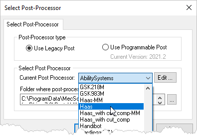

RhinoCAM installs with over 300 pre-defined post-processors for the most popular CNC machine controllers.
1.Select the Program tab.
|

2. From the Program tab, select Post to display the Set Post-Processor Options dialog.
From the Program tab, select Post to display the Set Post-Processor Options dialog.
 Dialog Box: Set Post-Processor Options |
3.Select a Post from the Current Post Processor selection menu.
 |
4.Each post in the menu has a corresponding post definition file (example: Haas.spm). The location of these files is displayed in the field directly below the menu called Folder where post-processor files are located.
5.Make sure this points to the correct folder where your post definition file is located. To change the folder location pick the ... button.
6.RhinoCAM also comes with a Post-Processor Generator (PPG) that allows you to edit each post definition file to suit your needs. Select the Edit ... button to the right of the Current Post Processor selection to load that post into the PPG.
|
|
7.IMPORTANT: If you edit a post definition file included with RhinoCAM make sure you use the Save As button from the PPG dialog and save your edited post using a unique file name different than the pre-installed post name (example" Haas-REV1.spm) and save the post definition file to a folder that is OUTSIDE of the RhinoCAM install path. This will ensure that you will always have access to your modified posts even if RhinoCAM in upgraded or uninstalled.
8.Then (from the Set Post-Processor Options dialog) select a Posted File Extension from the selection menu (example .nc). Your machine tool manual will tell you what file extension is required. If your file extension is not on the list, pick the Add New ... button to add it to the menu.
9.If you use a G-Code Editor program, you can tell RhinoCAM to launch it when displaying your G-Code files. By default, notepad is used to display G-Code files. See How to Post G-Code for more information.
10.You can also set file naming conventions to use when posting your G-Code files.
11.When done pick OK to close the menu.
12.You will see that the Post is now defined under the Machining Job.